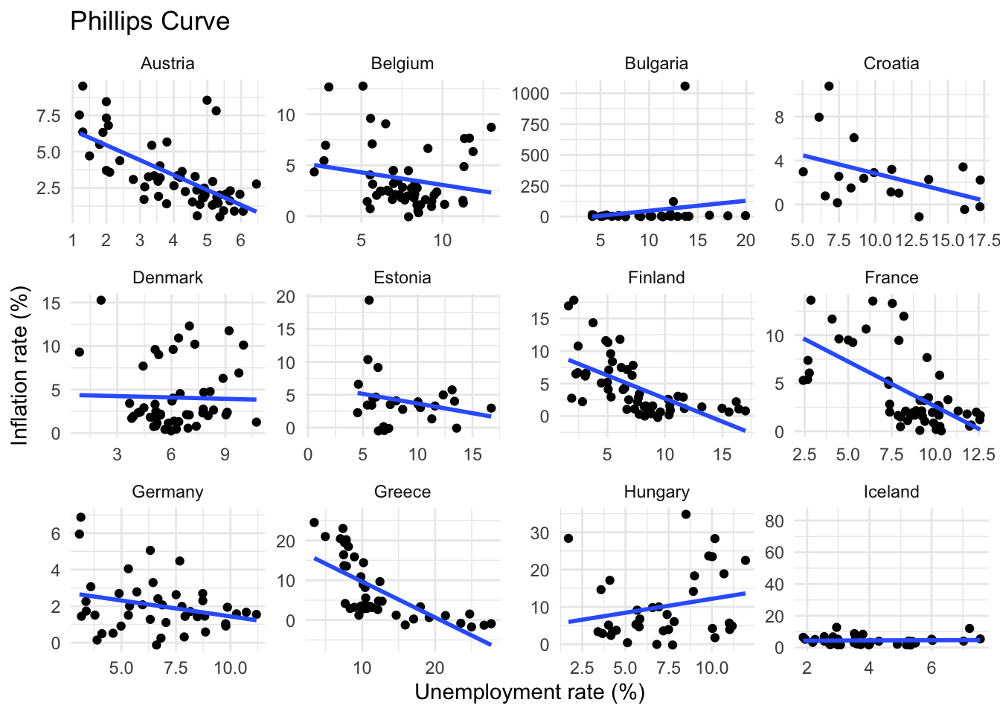
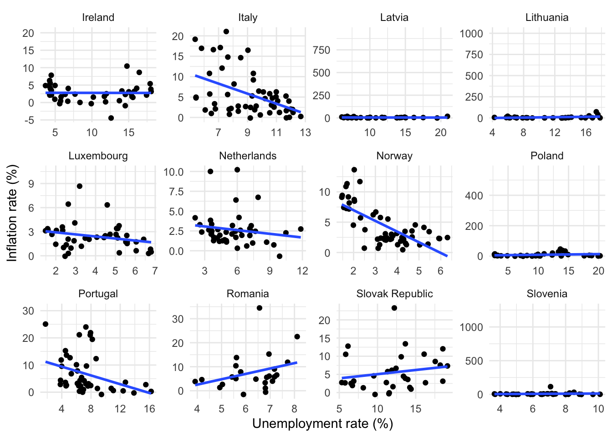
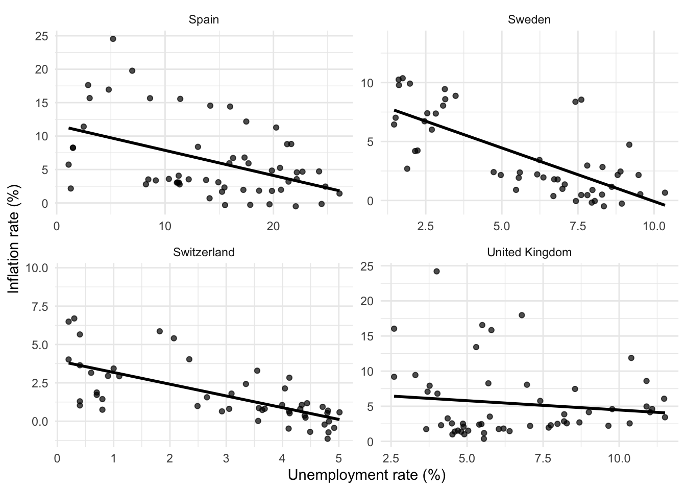
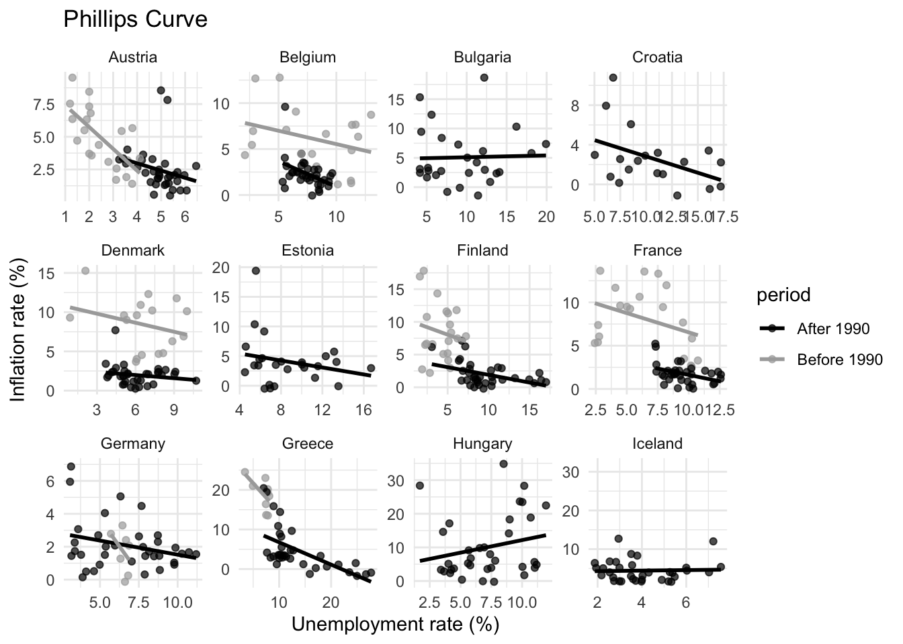
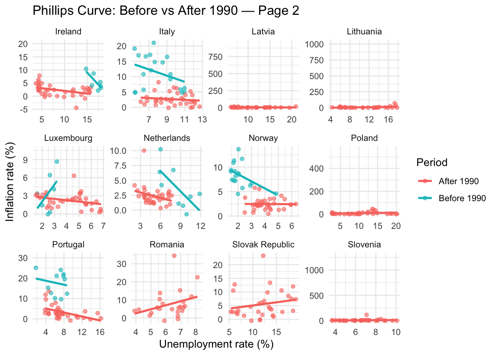
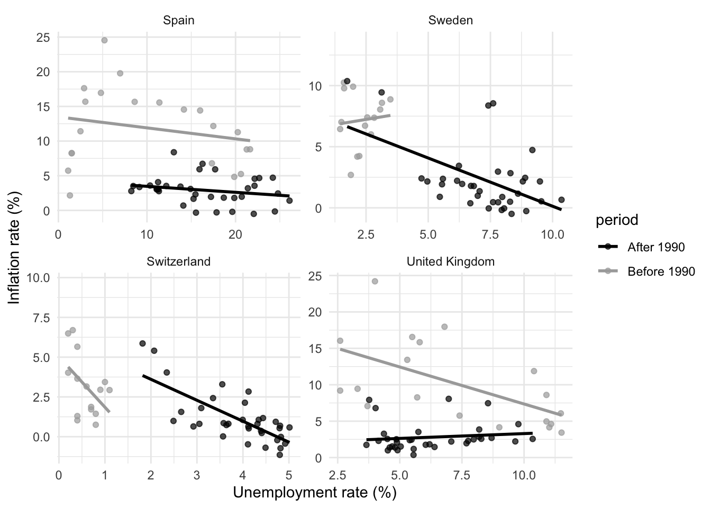

Code
# Basic setup
here::i_am("Projet-Data-Management-Elisa-Adriel.Rproj")
# Libraries
library(vroom)
library(dplyr)
library(knitr)
library(tidyr)
library(ggplot2)
library(ggforce)# Basic setup
here::i_am("Projet-Data-Management-Elisa-Adriel.Rproj")
# Libraries
library(vroom)
library(dplyr)
library(knitr)
library(tidyr)
library(ggplot2)
library(ggforce)The ggforce package was found on Reddit and provided a better alternative to facet_wrap, namely facet_wrap_paginate, especially due to the high quantity of different entities (countries) that we face in this dataset.
The dynamics in the labor market are the most complicated out of all markets, because it mixes the humane reasoning and the economic one. The Phillips curve has always been a reference tool because of the simplicity of the relationship between prices and unemployment it created. This relationship could not only provide an analytically point of view about the conjuncture, but also a policy tool. In every economics class, the Phillips curve was said to be negatively slopped, but as one progresses, one realizes that this is less and less the case and that multiple other underlying factors actually drive these two forces. This is what we try to explore today.
Our two sources are from the OECD Data Explorer’s 117 Economic Outlook and the World Development Indicator.
# Loading data
OECD <- vroom("data/DATA OCDE.csv")
WDI <- vroom("data/DATA WDI.csv")All the data in OECD is annual and there are many unnecessary columns. We keep only the reference area, measure, time period and observationvalue of the measure, respectively named country, measure, time and value. We will also rename all variables such that they will be identifiable from the OECD database, but still recognizable.
# Manipulating OECD data
OECD <- OECD |>
select(`Reference area`, Measure, TIME_PERIOD, OBS_VALUE) |>
rename(
country = `Reference area`,
measure = Measure,
time = TIME_PERIOD,
value = OBS_VALUE
) |>
pivot_wider(
names_from = measure,
values_from = value
) |>
rename(
nom.eff.ex.rate.oecd = `Nominal effective exchange rate, chain-linked, overall weights`,
labor.prod.oecd = `Labour productivity, total economy`,
unit.labor.cost.oecd = `Unit labour cost in total economy`,
real.eff.ex.rate.oecd = `Real effective exchange rate, constant trade weights`,
terms.trade.oecd = `Terms of trade, goods and services`,
ex.rate.LCU.oecd = `Exchange rate, national currency per USD`,
pot.y.vol.oecd = `Potential output volume`,
emp.tot.oecd = `Total employment (labour force survey basis)`,
wages.oecd = `Wages, total economy`,
compensation.rate.oecd = `Compensation rate, total economy`,
wage.rate.oecd = `Wage rate, total economy`,
pot.y.nom.oecd = `Potential output, nominal value`,
emp.country.spec.oecd = `Employment, country specific`,
pot.emp.oecd = `Potential employment of total economy`,
tot.pop.oecd = `Total population`,
work.age.oecd = `Working-age population, age 15-74`,
gov.emp.oecd = `General government employment`,
emp.tot.nat.account.oecd = `Total employment (national accounts basis)`,
dependent.emp.oecd = `Dependent employment, total economy`,
self.emp.tot.oecd = `Total self-employed`,
unemp.level.oecd = `Unemployment, level`,
labor.force.oecd = `Labour force`,
cpi.oecd = `Consumer price index`,
emp.tot.gr.oecd = `Total employment, growth`,
st.IR.oecd = `Short-term interest rate`,
lt.IR.gov.bonds.oecd = `Long-term interest rate on government bonds`,
ecb.IR.oecd = `Central bank key interest rate`,
labor.force.participation.work.age.oecd = `Labour force participation rate, as a percentage of population aged 15-74`,
core.infl.oecd = `Core inflation`,
hours.per.work.oecd = `Hours worked per worker, total economy`,
headline.infl.oecd = `Headline inflation`,
unemp.rate.oecd = `Unemployment rate`,
ex.rate.usd.oecd = `Exchange rate, USD per national currency`
) |>
pivot_longer(
cols = -c("country","time"),
names_to = "measure",
values_to = "value"
) |>
mutate(
time = as.integer(time),
value = as.numeric(value)
) |>
drop_na()WDI data is also annual and we also need to get rid of unnecessary columns. We will also use pivot_longer in order to group all the different columns for the different variables in a new measure column and their values in the value one. Also, Time will be renamed as time.
# Manipulating WDI
WDI <- WDI |>
select(-c(`Time Code`, `Country Code`)) |>
rename(
country = `Country Name`,
time = Time,
cpi.wdi = `Inflation, consumer prices (annual %) [FP.CPI.TOTL.ZG]`,
unemp.youth.tot.wdi = `Unemployment, youth total (% of total labor force ages 15-24) (national estimate) [SL.UEM.1524.NE.ZS]`,
unemp.tot.wdi = `Unemployment, total (% of total labor force) (national estimate) [SL.UEM.TOTL.NE.ZS]`,
unemp.male.wdi = `Unemployment, male (% of male labor force) (national estimate) [SL.UEM.TOTL.MA.NE.ZS]`,
unemp.female.wdi = `Unemployment, female (% of female labor force) (national estimate) [SL.UEM.TOTL.FE.NE.ZS]`,
unemp.inter.male.wdi = `Unemployment with intermediate education, male (% of male labor force with intermediate education) [SL.UEM.INTM.MA.ZS]`,
unemp.inter.female.wdi = `Unemployment with intermediate education, female (% of female labor force with intermediate education) [SL.UEM.INTM.FE.ZS]`,
unemp.inter.tot.wdi = `Unemployment with intermediate education (% of total labor force with intermediate education) [SL.UEM.INTM.ZS]`,
unemp.basic.male.wdi = `Unemployment with basic education, male (% of male labor force with basic education) [SL.UEM.BASC.MA.ZS]`,
unemp.basic.female.wdi = `Unemployment with basic education, female (% of female labor force with basic education) [SL.UEM.BASC.FE.ZS]`,
unemp.basic.tot.wdi = `Unemployment with basic education (% of total labor force with basic education) [SL.UEM.BASC.ZS]`,
unemp.adv.male.wdi = `Unemployment with advanced education, male (% of male labor force with advanced education) [SL.UEM.ADVN.MA.ZS]`,
unemp.adv.female.wdi = `Unemployment with advanced education, female (% of female labor force with advanced education) [SL.UEM.ADVN.FE.ZS]`,
unemp.adv.tot.wdi = `Unemployment with advanced education (% of total labor force with advanced education) [SL.UEM.ADVN.ZS]`,
cover.benef.ALMP.rich.wdi = `Coverage of unemployment benefits and ALMP in richest quintile (% of population) [per_lm_alllm.cov_q5_tot]`,
cover.benef.ALMP.poor.wdi = `Coverage of unemployment benefits and ALMP in poorest quintile (% of population) [per_lm_alllm.cov_q1_tot]`,
cover.benef.ALMP.tot.wdi = `Coverage of unemployment benefits and ALMP (% of population) [per_lm_alllm.cov_pop_tot]`,
adequacy.cover.ALMP.wdi = `Adequacy of unemployment benefits and ALMP (% of total welfare of beneficiary households) [per_lm_alllm.adq_pop_tot]`,
benef.results.poor.wdi = `Benefit incidence of unemployment benefits and ALMP to poorest quintile (% of total U/ALMP benefits) [per_lm_alllm.ben_q1_tot]`,
wage.male.wdi = `Wage and salaried workers, male (% of male employment) (modeled ILO estimate) [SL.EMP.WORK.MA.ZS]`,
wage.female.wdi = `Wage and salaried workers, female (% of female employment) (modeled ILO estimate) [SL.EMP.WORK.FE.ZS]`,
wage.tot.wdi = `Wage and salaried workers, total (% of total employment) (modeled ILO estimate) [SL.EMP.WORK.ZS]`,
deflator.wdi = `Inflation, GDP deflator (annual %) [NY.GDP.DEFL.KD.ZG]`,
cpi.index.wdi = `Consumer price index (2010 = 100) [FP.CPI.TOTL]`
) |>
pivot_longer(
cols = -c(time, country),
names_to = "measure",
values_to = "value"
) |>
mutate(
time = as.integer(time),
value = as.numeric(ifelse(value == "..", NA, value))
) |>
drop_na()We can now merge both datasets and get some useful statistics out of them:
# Merging data
data_long <- bind_rows(
OECD |>
filter(country %in% intersect(OECD$country, WDI$country)),
WDI |>
filter(country %in% intersect(OECD$country, WDI$country))
) |>
drop_na()
# Summarizing data
data_long |>
summarise(
"Countries" = n_distinct(country),
"Variables" = n_distinct(measure),
"Start date" = min(time),
"End date" = max(time)
) |>
kable()| Countries | Variables | Start date | End date |
|---|---|---|---|
| 28 | 57 | 1960 | 2026 |
# Transforming the data wide for further use
data_wide <- data_long |>
pivot_wider(
names_from = "measure",
values_from = "value"
)Therefore, our total dataset comprises 28 countries for 57 variables, and spans 1960 to 2026. Of course, for analysis purposes, we will reduce this dataset and use subsets, which will be specified every time.
The curve was conceptualized by William Phillips in 1958 in the Economica journal. He apparently observed the negative relationship between the increase in nominal wages and unemployment between 1861 and 1957.
A few people actually know the true story behind this curve, but according to a friend of Phillips who then worked at the ECB and passed down this story in the Financial Analysis department, Phillips actually computed the curve … by hand! In fact, he took the data, created 5 or so averages and observed the negative relationship in the graph. This is the true (yet not so sexy and serious) story behind the “statistical observation” of this curve. Although his work was thereafter taken by other brilliant economist, which found (not so strong though) similar relationships.
He derived the following relationship:
\[ \frac{\Delta W}{W}=\alpha\cdot U^{-\beta}-\gamma \]
Where \(\frac{\Delta W}{W}\) represents the rate of change of nominal wages and \(U\) represents unemployment. The rest are parameters. This equation has a very practical theoretical reasoning which serves as a strong foundation for wage bargaining theory, which itself lies in the center of labor market economics. When unemployment increases, the firm has more “supply” of potential workers, therefore, their bargaining power decreases, and so does their wages, which in turns create a decrease in prices, because firms can supply more. Vice-versa if unemployment decreases.
NOTE: Une fois de plus, je ne pense pas me tromper … mais ça pue ChatGPT dans beaucoup d’endroits du texte, d’autant que ce n’est pas sourcé etc… Je pense à éviter ou alors à lire des articles brefs sur l’histoire de la Phillips curve qu’on a quand même pas mal couvert. Après si je me trompe, my bad! :)
The study of British data confirmed the existence of an inverse relationship between unemployment and the rate of change in nominal wages. Popularized as the “Phillips curve,” this relationship quickly became fundamental for two reasons. It allowed Keynesian macroeconomics to move from a static to a dynamic framework by introducing a mechanism that links output, employment, and price evolution over time. In the original Keynesian model, with fixed prices, fluctuations in activity were explained by changes in demand, but the model did not account for price dynamics. The Phillips curve filled this gap: for a given period, demand determines output and employment, which in turn determine unemployment. Through the Phillips relationship, unemployment then affects wage growth, and if wage changes pass through to prices, it drives inflation dynamics from one period to the next.
Later, in 1960, Samuelson and Solow extended the Phillips framework using U.S. data from 1900 to 1960. Assuming that wage variations translate into prices through production costs, they reformulated the original relationship between unemployment and wage inflation into one between unemployment and price inflation. This version of the Phillips curve suggested a possible trade-off between inflation and unemployment, with profound implications for economic policy
The newest researches go as far as to develop an open-economy Phillips curve, where inflation is influenced by both wage levels and the exchange rate:
\[ \pi_t=\gamma_1 \cdot \mathbb{E}_t[\pi_{t+1}]+\gamma_2 \cdot x_t + \gamma_3 \cdot q_t \]
Where \(\gamma_1\), \(\gamma_2\) and \(\gamma_3\) are parameters, \(\pi_t\) represents domestic inflation, \(x_t\) is the (real) output gap and \(q_t\) the (real) exchange rate. This equation is based on Gali & Monacelli (2005). See Appendix A for full derivation.
Let us represent as an “entrée” a basic scatter plot for the Phillips curve for 28 European countries over the period and we are using WDI data because it is more complete. Moreover, we exclude inflation values above 40% as in Yamada & Bell (2012).
# First page
data_wide |>
filter(cpi.wdi <= 40) |>
select(time, country, cpi.wdi, unemp.tot.wdi) |>
ggplot(aes(x = unemp.tot.wdi, y = cpi.wdi)) +
geom_point(alpha = 0.7) +
geom_smooth(method = "lm", formula = y ~ x, se = FALSE, color = "black") +
facet_wrap_paginate(~ country, ncol = 4, nrow = 3, page = 1, scales = "free") +
labs(
title = "Phillips Curve",
x = "Unemployment rate (%)",
y = "Inflation rate (%)"
) +
theme_minimal()
# Second page
data_wide |>
filter(cpi.wdi <= 40) |>
select(time, country, cpi.wdi, unemp.tot.wdi) |>
ggplot(aes(x = unemp.tot.wdi, y = cpi.wdi)) +
geom_point(alpha = 0.7) +
geom_smooth(method = "lm", formula = y ~ x, se = FALSE, color = "black") +
facet_wrap_paginate(~ country, ncol = 4, nrow = 3, page = 2, scales = "free") +
labs(
x = "Unemployment rate (%)",
y = "Inflation rate (%)"
) +
theme_minimal()
# Third page
data_wide |>
filter(cpi.wdi <= 40) |>
select(time, country, cpi.wdi, unemp.tot.wdi) |>
filter(country %in% c("Spain", "Sweden", "Switzerland", "United Kingdom")) |>
ggplot(aes(x = unemp.tot.wdi, y = cpi.wdi)) +
geom_point(alpha = 0.7) +
geom_smooth(method = "lm", formula = y ~ x, se = FALSE, color = "black") +
facet_wrap(~ country, scales = "free") +
labs(
x = "Unemployment rate (%)",
y = "Inflation rate (%)"
) +
theme_minimal()
A simple visualization reassures us on theory. We can indeed see that over the complete span 1960-2026, the Phillips curve seems, for most countries, to obey the theory and display a downward slopping tendency. There are though some surprising results, as we can see mainly for the “Eastern Block” countries, which display almost flat or slightly upward sloping curves.
Whether these results are due to true economic tendencies or simply a lack of data or data mismatch will be determined with the analysis.
The question of the curvature of the Phillips curve, however, requires the differentiation between periods, say decades or key dates, which will be our next observation.
NOTE: peut-être pour avant-après 2000 aussi s’il nous manque des points de donnée pour 1990 pour certains pays? Car comme tu l’as dit, la plupart de ceux de l’Est auront rarement des données bien établies
We focus on 1990 as the dividing year because it marks a significant structural shift in the European and global economy. Around this time, Europe experienced major political and economic transformations, mainly provoked by the fall of the USSR, along with that of the Berlin Wall, the reunification of Germany, and the liberalization of formerly planned economies in Eastern Europe. These events altered labor markets, inflation dynamics, and macroeconomic policies across the continent.
Additionally, the early 1990s coincide with the widespread adoption of modern central banking practices, with many European countries emphasizing stricter inflation targeting. Using 1990 as a breakpoints allows us to examine how the Phillips curve relationship between unemployment and inflation may have changed before and after these structural shifts.
# First page
data_wide |>
filter(cpi.wdi <= 40) |>
mutate(
period = if_else(time < 1990, "Before 1990", "After 1990")
) |>
select(time, country, cpi.wdi, unemp.tot.wdi, period) |>
ggplot(aes(x = unemp.tot.wdi, y = cpi.wdi, color = period)) +
geom_point(alpha = 0.7) +
geom_smooth(method = "lm", formula = y ~ x, se = FALSE) +
facet_wrap_paginate(~ country, ncol = 4, nrow = 3, page = 1, scales = "free") +
labs(
title = "Phillips Curve",
x = "Unemployment rate (%)",
y = "Inflation rate (%)"
) +
scale_color_manual(values = c(
"Before 1990" = "darkgrey",
"After 1990" = "black"
)) +
theme_minimal()
# Second page
data_wide |>
filter(cpi.wdi <= 40) |>
mutate(
period = if_else(time < 1990, "Before 1990", "After 1990")
) |>
select(time, country, cpi.wdi, unemp.tot.wdi, period) |>
ggplot(aes(x = unemp.tot.wdi, y = cpi.wdi, color = period)) +
geom_point(alpha = 0.7) +
geom_smooth(method = "lm", formula = y ~ x, se = FALSE) +
facet_wrap_paginate(~ country, ncol = 4, nrow = 3, page = 2, scales = "free") +
labs(
x = "Unemployment rate (%)",
y = "Inflation rate (%)"
) +
scale_color_manual(values = c(
"Before 1990" = "darkgrey",
"After 1990" = "black"
)) +
theme_minimal()
# Third page
data_wide |>
filter(cpi.wdi <= 40) |>
mutate(
period = if_else(time < 1990, "Before 1990", "After 1990")
) |>
select(time, country, cpi.wdi, unemp.tot.wdi, period) |>
filter(country %in% c("Spain", "Sweden", "Switzerland", "United Kingdom")) |>
ggplot(aes(x = unemp.tot.wdi, y = cpi.wdi, color = period)) +
geom_point(alpha = 0.7) +
geom_smooth(method = "lm", formula = y ~ x, se = FALSE) +
facet_wrap(~ country, scales = "free") +
labs(
x = "Unemployment rate (%)",
y = "Inflation rate (%)"
) +
scale_color_manual(values = c(
"Before 1990" = "darkgrey",
"After 1990" = "black"
)) +
theme_minimal()
The Phillips Curve graphs compare inflation and unemployment rates before and after 1990 across various countries. Before 1990, many nations, like France and Spain, show a clear inverse relationship, aligning with the traditional Phillips Curve theory. However, post-1990, this relationship often weakens, disappears or even reverse, as seen in Germany or the UK, suggesting shifts in economic dynamics.
Furthermore, some countries, in particular eastern countries, lack pre-1990 data, which renders comparison complicated and pushes to period-wise comparison. For that, it is better to either reduce sample and focus on decade-wise comparison or keep a sample large enough and compare between large enough periods.
NOTE: Pas sûr pour la France ou même pour la concentration sur un pays, car on a principalement des variables de politiques appliquables seulement au niveau de l’Union, style les taux de changes, la politique monétaire et certaines politiques européennes
This model allows us, contrary to a classical Difference-in-Difference (DiD) model, to analyze the cross-period changes of the Phillips curve over time, especially the impacts of the underlying variables’ (policies, sensibilities, shocks…) period-specific and cross-period influences on the slope and the curvature. Furthermore, from Appendix A we know that thanks to Okun’s law we can express the NKPC in terms of economic slack, i.e., unemployment gap.
Formally, let \(\pi_t\) denote inflation, \(u_t\) unemployment gap, then \(u_t^2\) captures the nonlinear sensitivity to slack, \(D_{k,t}\) denotes the \(k\)-th period dummy variable, which takes values in \(\{0,1\}\), indexed by \(k=1,...,K-1\) and \(Z_{j,t}\) the underlying structural or policy variables, indexed by \(j=1,...,J\).
The model specification is:
\[ \begin{aligned} \pi_t = &\; \underbrace{\alpha}_{\text{Intercept}} + \underbrace{\beta_1 u_t}_{\text{Baseline slope}} + \underbrace{\beta_2 u_t^{2}}_{\text{Baseline curvature}} \\ &+ \underbrace{\sum_{k=1}^{K-1} \delta_k D_{k,t}}_{\text{Period fixed effects}} + \underbrace{\sum_{j=1}^{J} \gamma_j Z_{j,t}}_{\text{Direct effects of underlying variables}} \\ &+ \underbrace{\sum_{k=1}^{K-1} \theta_{1k} (u_t \times D_{k,t})}_{\text{Slope differences across periods}} + \underbrace{\sum_{k=1}^{K-1} \theta_{2k} (u_t^{2} \times D_{k,t})}_{\text{Curvature differences across periods}} \\ &+ \underbrace{\sum_{j=1}^{J} \phi_{1j} (u_t \times Z_{j,t})}_{\text{Effect of underlying variables on slope}} + \underbrace{\sum_{j=1}^{J} \phi_{2j} (u_t^{2}\times Z_{j,t})}_{\text{Effect of underlying variables on curvature}} \\ &+ \underbrace{ \sum_{k=1}^{K-1}\sum_{j=1}^{J} \psi_{1kj} (u_t \times Z_{j,t} \times D_{k,t}) }_{\text{Period-specific slope effects of underlying variables}} \\ &+ \underbrace{ \sum_{k=1}^{K-1}\sum_{j=1}^{J} \psi_{2kj} (u_t^{2} \times Z_{j,t} \times D_{k,t}) }_{\text{Period-specific curvature effects of underlying variables}} \\ &+ \varepsilon_t. \end{aligned} \] Where \(\beta_1\) and \(\beta_2\) specify the baseline of the model, indicating the slope sign and the curvature, or sensitivity, of the slope, respectively, \(\theta_{1k}\) and \(\theta_{2k}\) are period effects-specific parameters and indicate how the slope and the curvature are respectively affected, \(\phi_{1j}\) and \(\phi_{2j}\) are underlying effects-specific parameters and indicate how the slope and the curvature are respectively affected, and \(\psi_{1kj}\) and \(\psi_{2kj}\) are cross-period, underlying effects-specific parameters indicating the respective differing effects (if there are) on the slope and the curvature of the curve.
Contrary to the usual binary DiD model, which is often found in the form: \[ Y_{it} = \alpha + \beta \, (Treat_i \times Post_t) + \gamma_i + \delta_t + \varepsilon_{it} \] And which concerns the differences between a “treatment” and a “control” group, this experimental model concerns a more generalized approach, including non-linearity, more-than-two interaction terms and cross-period parameters. Inspiring sources using this kind of method in economics are niche, but not inexistant, seeing Baker et al. (2025), Callaway & Sant’Anna (2018), (2020), or Chaisemartin et al. (2022).
In the classical New Keynesian model, the demand side of the economy yields the CES consumption function:
\[ C_t(i)=\left(\frac{P_t(i)}{P_t} \right)^{-\varepsilon}\cdot C_t \] For \(i\in[0,1]\) firms. Market clears at \(Y_t(i)=C_t(i)\). Firms produce according to a linear production function \(Y_t(i)=A_tN_t(i)\) where \(a_t\equiv \log{A_t}\) follows an AR(1) process with MA(\(\infty\)) representation \(a_t=\sum_{k=0}^{+\infty}{\rho_a^k \epsilon_{t-k}}\). Moreover, firms price a la Calvo (1983), where \(1-\theta\) (oligopolist) firms can reset prices at level \(P_t^*(i)\) in each period, which implies maximizing:
\[ \max_{P_t(i)} {\mathbb{E}_t \left[\sum_{k=0}^{+\infty}{(\beta\theta)^k \Lambda_{t,t+k} Y_{t+k|t}\left(P_t^*(i)-MC_{t+k}P_{t+k} \right)} \right]} \] Under the demand constraint \(Y_{t+k|t}=\left(\frac{P_t^*(i)}{P_t} \right)^{-\varepsilon}\cdot Y_{t+k}\) and the marginal cost of the firm defined as:
\[ MC_t=(1-\chi) \frac{W_t}{P_t}+\chi S_t P_t^f \]
Where \(S_t\) is the nominal exchange rate and \(P_t^f\) is the foreign price index. \(\chi\) represents home bias preference, and therefore is a natural index for openness to trade The optimal consumer price index (CPI) inflation condition, where inflation is defined as \(\pi_t \equiv p_t-p_{t-1}\), is given by:
\[ \pi_t=\beta \cdot \mathbb{E}_t[\pi_{t+1}]+\kappa \cdot \widehat{mc}_t \]
Where \(\kappa \equiv \frac{(1-\theta)(1-\beta\theta)}{\theta}\). Real marginal cost \(\widehat{mc}_t\) can be found by log-linearizing the firms’ nominal marginal cost, which holds for every firm due to the linearity of the production function:
\[ \widehat{mc}_t =(1-\chi)\cdot (\hat{w}_t-\hat{p}_t-\hat{a}_t)+\chi\cdot (\hat{s}_t+\hat{p}^f_t-\hat{p}_t) \\ \Leftrightarrow \widehat{mc}^*_t =(\hat{w}_t-\hat{p}_t-\hat{a}_t)+\alpha \cdot \hat{q}_t \] Where \(\hat{s}_t+\hat{p}^f_t-\hat{p}_t\equiv \hat{q}_t\) is exactly the formula for the real exchange rate, \(\widehat{mc}^*_t \equiv \frac{\widehat{mc}_t}{1-\chi}\) and \(\alpha \equiv \frac{\chi}{1-\chi}\). This allows to derive the final New Keynesian Phillips Curve (NKPC):
\[ \pi_t =\beta \cdot \mathbb{E}_t[\pi_{t+1}]+\kappa \cdot (\hat{w}_t-\hat{p}_t-\hat{a}_t)+\kappa\alpha \cdot \hat{q}_t\\ \] Which allow us to derive three different possible NKPC:
\[ \text{NKPC (1):} \quad \pi_t =\gamma_1 \cdot \mathbb{E}_t[\pi_{t+1}]+\gamma_2 \cdot (\hat{w}_t-\hat{p}_t-\hat{a}_t)+\gamma_3 \cdot \hat{q}_t \] With parameters \(\gamma_1\equiv\beta\), \(\gamma_2\equiv \kappa\) and \(\gamma_3\equiv\kappa \alpha\).
\[ \text{NKPC (2):} \quad \pi_t =\gamma_1 \cdot \mathbb{E}_t[\pi_{t+1}]+\gamma_2 \cdot (\hat{y}_t-\hat{y}^n_t)+\gamma_3 \cdot \hat{q}_t \] Using the fact that under imperfect competition, the real unit labor cost is equal to the output gap such that \(\hat{w}_t-\hat{p}_t-\hat{a}_t=\hat{y}_t-\hat{y}^n_t\), and with parameters \(\gamma_1\equiv\beta\), \(\gamma_2\equiv \kappa\varphi\) and \(\gamma_3\equiv\kappa \alpha\).
\[ \text{NKPC (3):} \quad \pi_t =\gamma_1 \cdot \mathbb{E}_t[\pi_{t+1}]+\gamma_2 \cdot (\hat{u}_t-\hat{u}^n_t)+\gamma_3 \cdot \hat{q}_t \] Using Okun’s law, which can be expressed as \(-\delta(\hat{y}_t-\hat{y}^n_t)=\hat{u}_t-\hat{u}^n_t\), and with parameters \(\gamma_1\equiv\beta\), \(\gamma_2\equiv -\frac{\kappa}{\delta}\) and \(\gamma_3\equiv\kappa \alpha\).